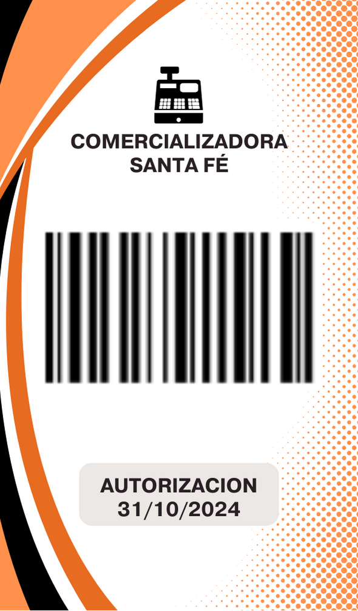

Galería de Diseños y Gafetes



Durante mi experiencia laboral en Supermercado Santa Fe, me desempeñé en el área de sistemas pero de igual forma apoyaba en soporte técnico, realizando diversas actividades relacionadas con la gestión y actualización de información del inventario. Entre mis principales funciones se encontraban la captura y actualización de precios, corrección de códigos de barras, configuración de básculas en el área de frutería, y soporte técnico a equipos de cómputo, impresoras y cajas registradoras.
Posteriormente, fui asignado como encargado del área de sistemas en la sucursal Bodega Noyola, donde además brindé apoyo en el área de mostrador, atendiendo llamadas, registrando pedidos y coordinando su entrega.
De forma proactiva, contribuí al mejoramiento visual del punto de venta, diseñando banners promocionales para resaltar productos y ofertas, así como un logotipo representativo para Supermercado Santa Fe, aportando a la identidad visual de la marca.
Esta experiencia fortaleció mis habilidades en gestión técnica, atención al cliente, comunicación visual y trabajo multidisciplinario, combinando aspectos administrativos, operativos y de diseño.